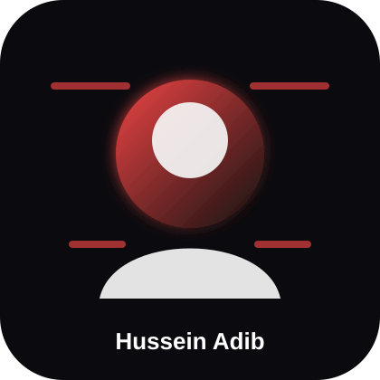

Hello, I'm
Hussein Adib
Computer & Communication Engineer with 2+ years of experience across network infrastructure, backend development, telecommunications, and enterprise IT solutions. I build reliable systems, troubleshoot complex environments, and turn technical requirements into practical solutions.

About Me
Engineering reliable digital systems
Focused on networking, backend systems, telecommunications, and operational problem solving.
Who I Am
I am a detail-oriented Computer & Communication Engineer with experience in network engineering, web/backend development, data management, and project coordination. My work combines infrastructure understanding with hands-on development to create systems that are stable, useful, and easy to operate.
I am currently strengthening my networking profile through CCNA studies while continuing to develop backend and database-driven systems.
Personal Info
Experience
Professional Timeline
Network engineering, web systems, data operations, and project leadership.
OGERO
Network Engineer Trainee
Worked with PSTN infrastructure, switching, transmission, troubleshooting, performance analysis, and network installation/maintenance support.
Freelance
Project Manager — Web Development
Managed web application lifecycles, coordinated development teams, gathered requirements, tracked timelines, and supported projects using React, Material UI, Node.js, and database-backed workflows.
Saleh Company
Data Entry Specialist
Managed large data volumes, improved data accuracy, validated information, organized files, and streamlined data entry operations.
Self-Employed
Project & Social Media Marketing Lead
Planned campaigns, coordinated teams, managed digital platforms, analyzed trends, and supported project promotion strategies.
Skills
Technical Skillset
A hybrid profile between networks, backend development, data, and business operations.
Networking
Backend & DB
Programming
Tools
Soft Skills
Business
Certifications
Education & Courses
Academic foundation and continuous professional development.
CCNA Courses
Cisco Networking Academy — In Progress
Ethical Hacking Foundation
Semicolon Academy — Beirut, Lebanon
Bachelor Degree
Computer & Communication Engineering — Lebanese International University
Projects
Selected Projects
A collection of software projects showing practical development, UI, logic, and problem-solving skills.
Portfolio Website
A modern black-and-red professional portfolio website showcasing my experience, skills, certifications, contact information, and selected software projects. Built with responsive HTML, CSS, and JavaScript and deployed online for recruiters.
Smart Tourist Guide
A smart tourism project designed to help users explore destinations, organize travel information, and improve the trip-planning experience through a clean digital interface.
Study Time Estimator
A productivity tool focused on estimating and organizing study time, helping students plan sessions more efficiently and manage workload with clearer time expectations.
Student Task Manager
A student-focused task management project for tracking assignments, tasks, deadlines, and daily academic responsibilities in a structured way.
Inventory App
An inventory management application built to support product tracking, organized records, stock visibility, and smoother data handling for business operations.
Job Finding Dashboard
A dashboard-style project focused on job discovery, structured listings, and a clean user experience for browsing employment opportunities.
Contact
Let's Connect
Open to IT, Network Engineering, Infrastructure, and Backend opportunities.